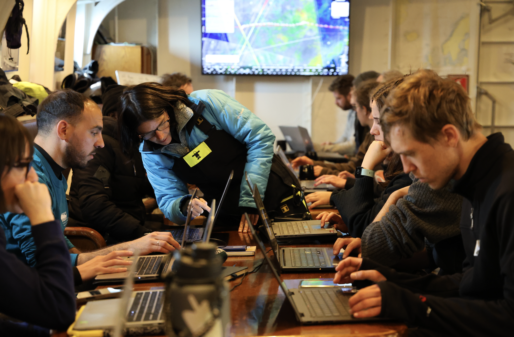
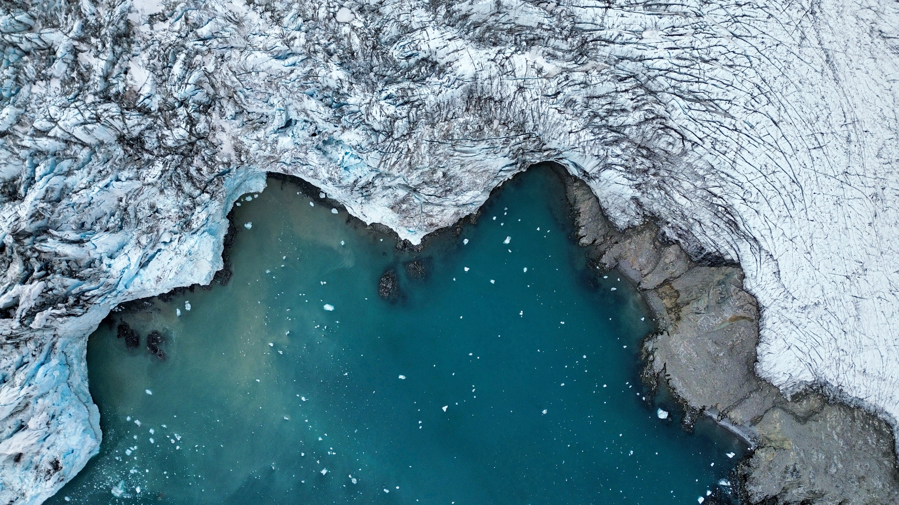
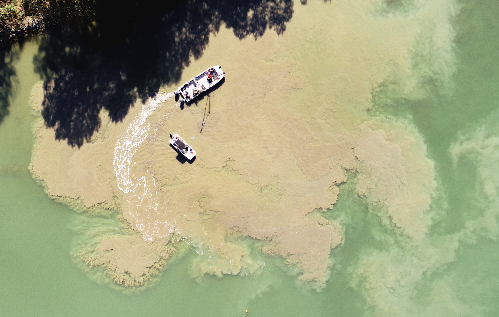
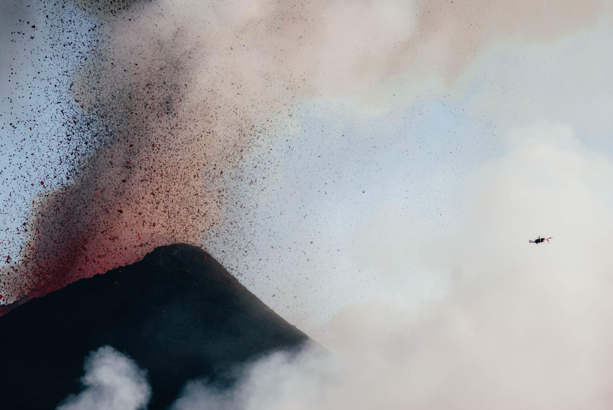

Alejandro Román
Postdoctoral Researcher at ICMAN-CSIC
Welcome to my website! I am a post-doctoral researcher at the Institute of Marine Sciences of Andalusia (Spain) (ICMAN-CSIC) in the DIGIDRON project under the Momentum CSIC Programme: Develop Your Digital Talent (MMT24-ICMAN-01). My research focuses on the development and application of drone-based remote sensing techniques for studying marine and coastal environmental phenomena, including polar Antarctic research.
What I work on
Research Lines

01Momentum CSIC Program
DIGIDRON Project: Development of emerging technologies for digitalization and data processing for the study of coastal environmental phenomena using sensors mounted on drones.

02Polar Research
An approach to the study of environmental phenomena affected by climate change, such as the evolution of Antarctic penguin colonies and the emergence of snow algal blooms in coastal snowfields.

03Ocean Color
Development of marine optics algorithms for the detection at local scale and monitoring of water quality in coastal regions using multi- and hyperspectral sensors deployable on drones.

04Emergencies
Use of drone technology and its integration with artificial intelligence to provide scientific support in emergency situations such as volcanic eruptions, wildfires, or floods.
Academic
Activity
Latest News & Updates
Let's Connect
Interested in collaboration or want to learn more about my research? Feel free to reach out!